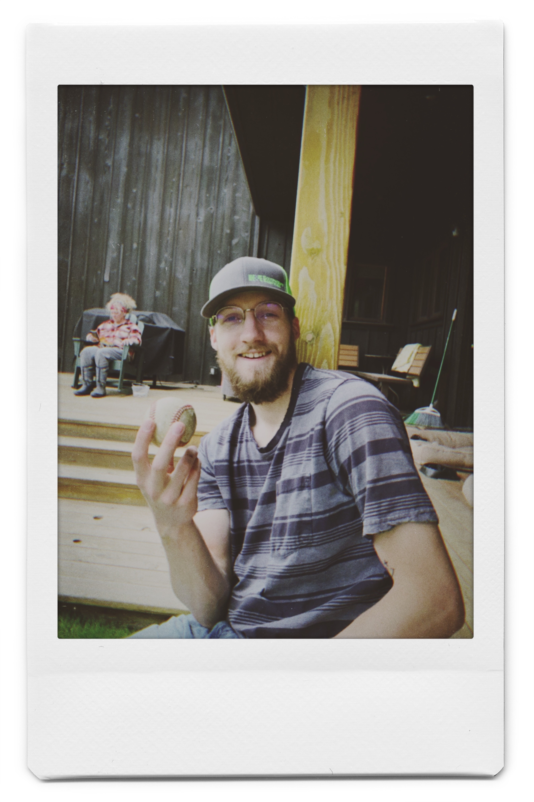

The internet. We all know it. We all love it.
But what actually is it?
At the most basic physical level, the internet is a bunch of wires connecting all of the computers around the world. That’s it! The “World Wide Web” is literally a web of wires that connect our devices together and allow them to talk to one another.
There are two kinds of computers on the internet: clients and servers. We are all familiar with clients. Client devices are the phones, iPads, laptops, and gaming consoles that we interact with on a daily basis. Servers are different kinds of computers that do just that; serve things like files and images to clients.
Clients make requests for files, images, and websites to servers. Servers listen for requests and return responses to those requests (usually the response is good and you get what you requested but sometimes other things happen and you can end up with a 404 Not Found response). That’s it. That’s the whole internet. Computers making requests and different computers sending responses to those requests across miles of wires.
The internet is just computers making requests for files and different computers sending responses to those requests across miles and miles of wires.
But let’s go deeper. Our website, untilitsnotfun.com, is literally just a collection of text files and images (which can be seen here!) that your browser understands. But for you (or to use our newly learned jargon, your client) to see those files rendered, they need to be on a server so that when your client requests the page, the server can respond and deliver it to you.
How does your client know what server the website is on and where to send the request? There are thousands and thousands of servers across the world and untilitsnotfun.com lives on one of them. This is where a special kind of server comes in called a Domain Name Server or DNS.
The DNS provides a map between a domain name (untilitsnotfun.com) to a more accurate server location called an IP address. It’s like you typing in “Cafe Yumm” into Google Maps and it returning the very precise latitude and longitude coordinates. You make a request to the DNS that you want to see untilitsnotfun.com and it points that request to the actual server where the untilitsnotfun.com files are. The server then hears the request and responds.
Let’s anthropomorphize all these elements to see how a conversation would go between all these elements:
I am going to make a quick side note here and comment on the speed of all this happening. Your request needs to go from your computer, through the air waves to your router, to a DNS somewhere in the world, to a server somewhere in the world. The server searches for all those files you are requesting and sends them all back to your computer. This is also a very simplified model of the internet and there is a lot more that happens during this process. The time between pressing enter and seeing a website happens in seconds. That is amazing. Think about all of the infrastructure and smart people it took and takes to keep the internet running next time you are waiting for something to load or buffer.
Now to sum this up so you can explain it at your next dinner party. The internet is a web of wires that connect all of the computers in the world together and allow them to communicate with each other. The two kinds of computers in the world are clients and servers. Clients are things like phones, laptops, and gaming consoles. Servers listen for requests from clients and serve them when requested. When you try to go to a website, that request goes to a Domain Name Server that maps the website’s domain name to a specific server location. The DNS routes that request to the server that has actual website files on it. The server responds by sending all of the website files to your client. Your browser understands how these files fit together and renders a beautiful website that you can use.
Keep in mind, this is a heavily simplified model of the internet so that I can understand it and put it into plain English for you to have a high level understanding of what goes on behind the scenes when you use your devices.
Come back next week for part two where we dive into a huge building block of the internet: APIs.
I have the honor to be Your Obedient Servant,
Westley

Westley and I broke our catch record this week (146)! We will keep you up to date on current records!
Jacob